غزة.. تاريخ، بحر، وأمل.
"غزة.. لؤلؤة المدينة الساحلية والاستراتيجية في العالم القديم، الحاضر الذي يعمل لوحة في الاستراتيجية."
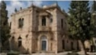
جذور كنعانية عريقة
غزة لؤلؤة تاريخية لـ 5,000 سنة مضت، سكنها الكنعانيون الأوائل وتضم مواقع أثرية وموانئ قديمة.
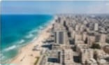
أفق ساحلي متجدد
أفق ساحلي متجدد؛ غزة الساحل والنمو المستمر الذي يضمن التنمية الحضرية والتميز الفلسطيني.
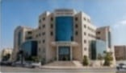
مركز تنمية وإبداع
غزة قوة اليوم في البناء والعمل في الفنية والأعمال، معرض للخدمات والأعمال والتعليم.
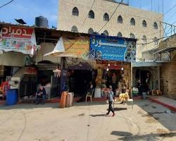
حياة السوق النابضة
تجسد أسواق غزة الشعبية قلب المدينة النابض بالحركة والتجارة، حيث يمتزج النشاط الاقتصادي بالعلاقات الاجتماعية الدافئة بين الباعة والزوار، لتروي حكاية مدينة حية تعشق الحياة.
معالم غزة التاريخية والحضرية.
معالم غزة التاريخية هي التي تعكس حيوية المدينة وتاريخها الحديث، وتبرز دورها الريادي في فلسطين.
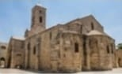
كنيسة القديس برفيريوس
واحد من أقدم الكنائس في العالم التي تعكس التآخي الديني والتعايش التاريخي.
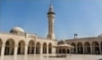
المسجد العمري الكبير
المسجد المعماري الكبير بمنطقة غزة القديمة، ويعد من أكبر مساجد القطاع.
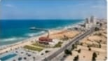
الواجهة البحرية
الواجهة البحرية الممتدة والجميلة التي تمتد من ميناء غزة وصولاً إلى مناطق الاستجمام.
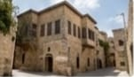
البلدة القديمة والأزقة الحجرية
البلدة القديمة بأصالتها وأزقتها الحجرية التي تروي قصص التاريخ.
أهل غزة.. روح وتضامن.
أهل غزة معروفون بعراقتهم وانتمائهم لهويتهم الفلسطينية وتراثهم الأصيل
التعليم العالي
تضم غزة نخبة من الجامعات والمؤسسات التعليمية التي تخرج أجيالاً متميزة.
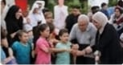
مجتمع متماسك
مجتمع متلاحم من الأهالي واللاجئين، تجمعه روابط اجتماعية وإنسانية عميقة.
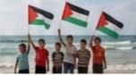
الأمل والانتماء
يعتز أهل غزة بهويتهم الفلسطينية وإصرارهم على البقاء والحرية.
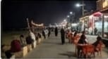
غزة التي لا تنام
غزة مدينة لا تنام، تزخر بالفعاليات والأسواق والمهرجانات التي تعكس صمودها.